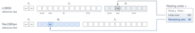
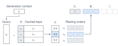
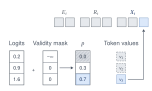
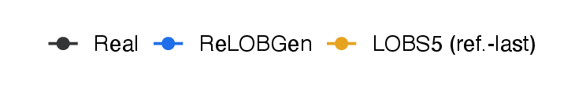
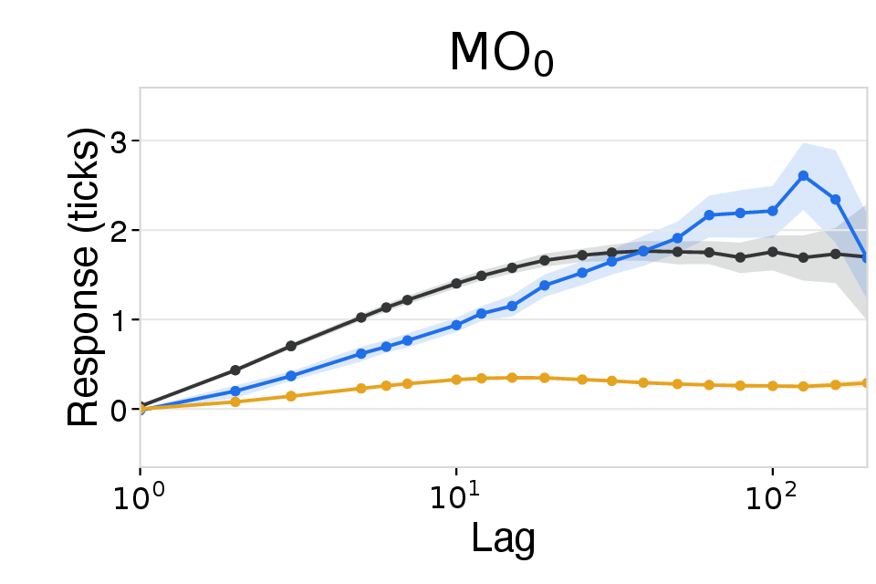
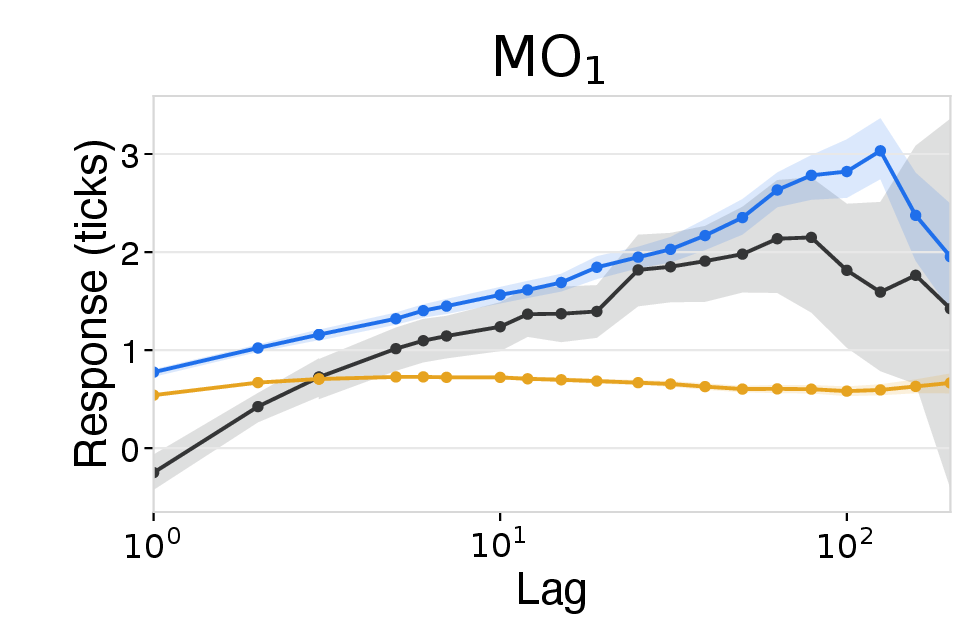
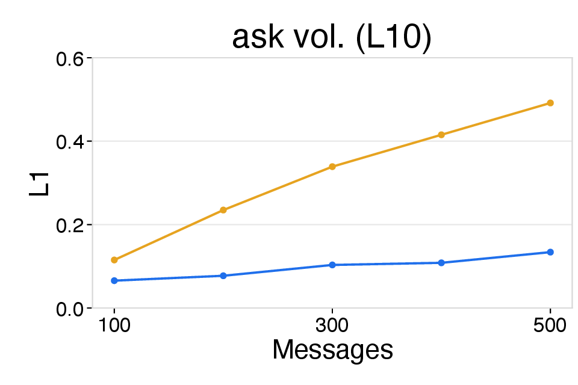
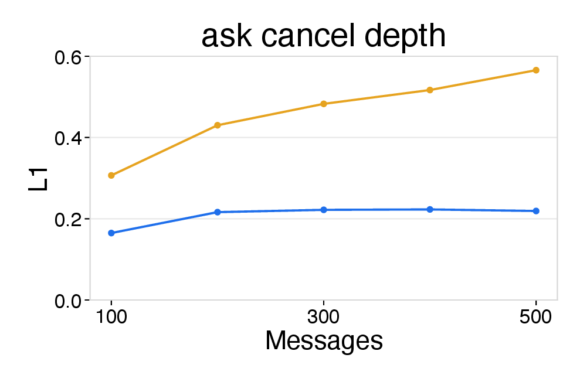
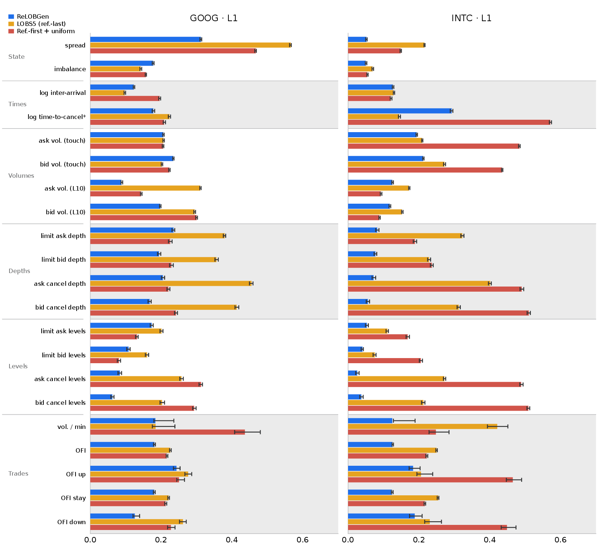

ReLOBGen: Replayable Limit Order Book Message Generation
Abstract
We propose ReLOBGen, a method for generating limit order book (LOB) messages that are replayable by construction. Replayability is required for closed-loop market simulation, yet existing LOB message generators may produce non-replayable raw messages, i.e., messages inconsistent with the current market state. These generators therefore rely on post-hoc correction or rejection followed by resampling, which may alter the replayed message distribution or increase inference cost. ReLOBGen instead ensures replayability during generation: it selects the referenced order from the resting orders in the current LOB and then generates the remaining message fields to be consistent with that order and the market state. For realistic reference selection, ReLOBGen samples from a learned distribution over eligible resting orders, efficiently computed from cached order representations and a context-dependent query. It then enforces the consistency of the remaining fields by masking out invalid tokens. Together, these components enable efficient generation of realistic messages without post-hoc correction or resampling. In 500-message rollouts, ReLOBGen achieves 100% replayability, improves market realism, particularly for top-of-book statistics and the relative prices of LOB messages, and provides a 2.7–3.6× speedup per replayed message over the LOBS5 baseline.
Method
A generated LOB message is replayable if the LOB simulator can use it to update the LOB without any correction. More specifically, a message Mt = (Et, Rt, Xt) consists of an event, a reference order, and an event order, where a non-add event (cancel, delete, or execute) acts on an existing resting order Rt in the current resting-order set 𝒪t−1. Mt is replayable if it satisfies both of the following conditions:
- Reference eligibility A non-add event references an eligible resting order: Rt ∈ 𝒞t(Et, 𝒪t−1) ⊂ 𝒪t−1.
- Event-order compatibility The event order is consistent with the event, the reference, and the current LOB.
ReLOBGen guarantees both by construction, generating each message as event → reference order → event order.
a Reference-first message representation

The reference order Rt comes before the event order Xt and carries its current remaining size, so it can constrain the fields generated after it.
b Resting-order selection

The reference is selected from eligible resting orders by scoring cached order keys against a context query.
c Inference-time masking

Invalid token values are masked given the selected reference and the market state.
Replayability and runtime
Post-processing rates, replayability violations, and runtime. 1,000 rollouts per stock (GOOG, INTC), each with 500 replayed messages on the JAX-LOB simulator. Runtime is measured on an NVIDIA RTX A6000 GPU and covers generation, post-processing, and simulator updates. Aborted baseline rollouts are excluded; ReLOBGen needs no restarts. Lower is better.
| Ticker | Method | Post-processing | Replayability violations | Runtime (ms) | |||
|---|---|---|---|---|---|---|---|
| Correction | Rejection | Reference | Event-order | Per replayed msg. | Per attempt | ||
| GOOG | LOBS5 (ref.-last) | 13.5% | 25.7% | 39.1% | 0.4% | 602 ± 164 | 447 ± 119 |
| LOBS5 (ref.-first) | 11.7% | 27.6% | 39.5% | 0.1% | 591 ± 145 | 426 ± 100 | |
| ReLOBGen | 0.0% | 0.0% | 0.0% | 0.0% | 227 ± 12 | 227 ± 12 | |
| INTC | LOBS5 (ref.-last) | 9.7% | 16.3% | 25.6% | 0.5% | 1216 ± 726 | 1018 ± 606 |
| LOBS5 (ref.-first) | 11.5% | 13.2% | 24.5% | 0.2% | 1058 ± 850 | 921 ± 744 | |
| ReLOBGen | 0.0% | 0.0% | 0.0% | 0.0% | 341 ± 150 | 341 ± 150 | |
- 100% replayable.
- ReLOBGen needs no correction or rejection, whereas the LOBS5 baselines correct or reject 25–39% of raw generation attempts.
- 2.7–3.6× faster per replayed message than LOBS5 (ref.-last).
- Fewer forward passes: a non-add message takes 7–8 forward passes instead of 17, because the reference order is selected in one step rather than decoded token by token, and fields with only one valid value are filled without a forward pass.
- No resampling: every attempt is replayed, so no computation is wasted on rejected attempts.
Rollout realism
LOB-Bench metric-group summary of unconditional L1 distances. Overall averages all metrics, and each group column averages its metrics. Ref.-first + uniform is also replayable but picks the reference uniformly from the eligible resting orders. Lower is better, and bold marks the lowest value.
| Ticker | Method | Overall | Metric group | |||||
|---|---|---|---|---|---|---|---|---|
| State | Times | Volumes | Depths | Levels | Trades | |||
| GOOG | LOBS5 (ref.-last) | 0.27 | 0.35 | 0.16 | 0.25 | 0.40 | 0.21 | 0.23 |
| Ref.-first + uniform | 0.24 | 0.31 | 0.20 | 0.22 | 0.23 | 0.20 | 0.27 | |
| ReLOBGen | 0.17 | 0.24 | 0.15 | 0.18 | 0.20 | 0.11 | 0.18 | |
| INTC | LOBS5 (ref.-last) | 0.22 | 0.14 | 0.14 | 0.20 | 0.32 | 0.17 | 0.27 |
| Ref.-first + uniform | 0.30 | 0.10 | 0.35 | 0.27 | 0.36 | 0.34 | 0.32 | |
| ReLOBGen | 0.11 | 0.05 | 0.21 | 0.16 | 0.07 | 0.04 | 0.15 | |
Market impact and error accumulation (GOOG)





Left: lagged price responses after market orders without (MO0) and with (MO1) an immediate mid-price change; LOBS5 responses stay largely flat, while ReLOBGen tracks the real data more closely. Right: L1 distance over successive 100-message intervals, where ReLOBGen shows lower error.
All 21 unconditional LOB-Bench metrics

Per-metric unconditional L1 distances with 99% bootstrap confidence intervals.
- Better realism than LOBS5.
- Largest gains in top-of-book statistics (State) and in where orders are submitted and canceled relative to the book (Depths, Levels).
- ReLOBGen reproduces how prices respond to market orders, which LOBS5 largely misses.
- Better realism than uniform selection.
- Replayability alone does not make rollouts realistic: which eligible order a message references matters.
- Learned selection picks more realistic cancellation targets, improving all five cancel-related metrics.
BibTeX
@article{kang2026relobgen,
title={ReLOBGen: Replayable Limit Order Book Message Generation},
author={Kang, Junoh and Lee, Kiseop and Han, Bohyung},
journal={arXiv preprint},
year={2026}
}